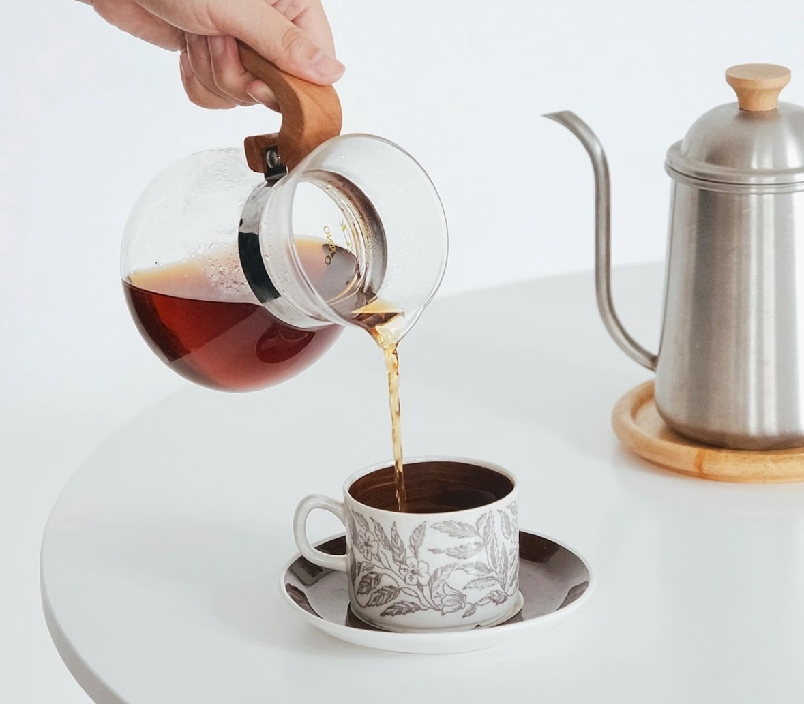
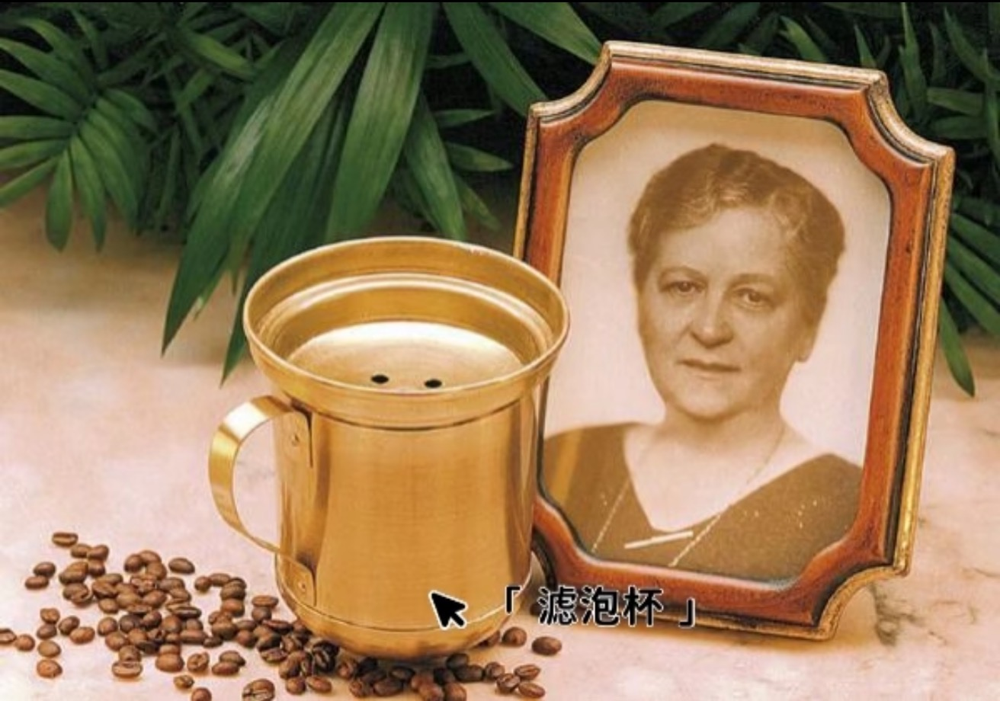
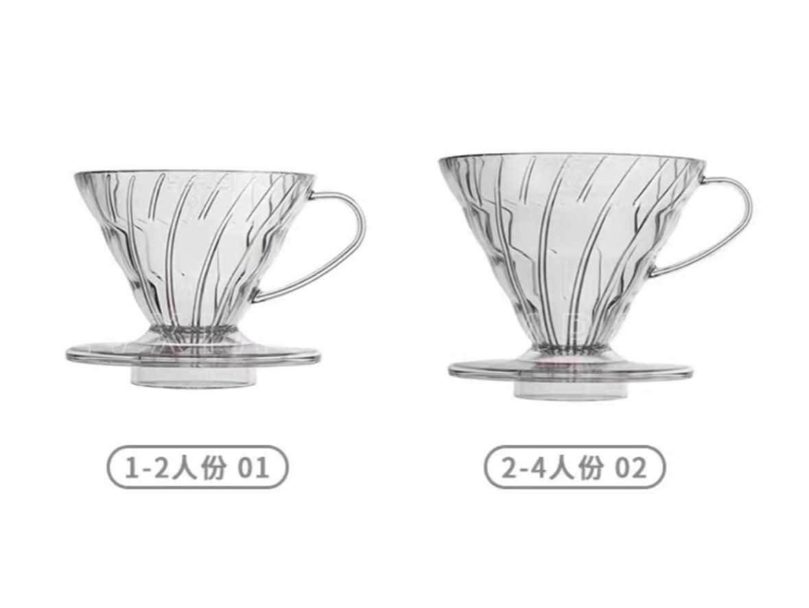
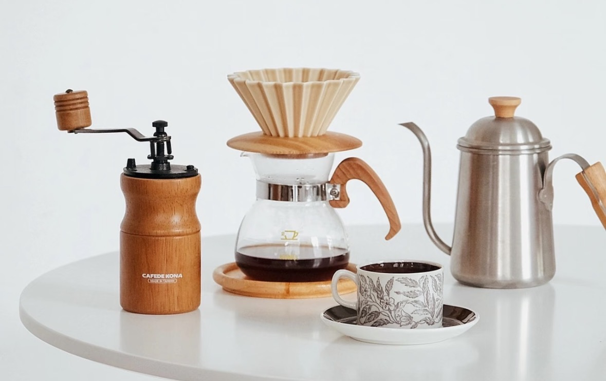

手冲咖啡：历史溯源与必备器具详解
手冲咖啡，作为一种手工冲泡的咖啡方式，以其独特的魅力和对风味的精准把控，深受咖啡爱好者的喜爱。它不仅仅是一种冲煮方法，更是一种展现咖啡豆独特风味和冲泡者个人技巧的艺术。
手冲咖啡的历史与发展
起源与早期技术革新（19世纪末-20世纪初）
手冲咖啡的雏形可追溯至19世纪末的德国。1895年，德国主妇梅丽塔·本茨（Melitta Bentz）发明了滤泡式咖啡制作法，通过使用吸墨水纸作为过滤介质，解决了传统冲泡方法中咖啡渣残留的问题，奠定了现代手冲技术的基础。1908年，梅丽塔公司正式注册滤纸专利，标志着工业化滤泡器具的诞生。
工艺演进与地域传播（20世纪中期）
20世纪30年代，手冲技术传入日本，并与当地茶道文化融合，衍生出注重精细化操作的日式手冲流派。1950年代，Hario公司推出玻璃V60滤杯，其螺旋导流槽设计显著提升萃取均匀度，成为行业标杆。同期，美国市场兴起电动滴滤机，但手动冲泡在亚洲仍以“慢工艺”形式延续发展。
第三波咖啡浪潮下的复兴（21世纪至今）
2000年后，第三波精品咖啡运动强调产地溯源与风味表达，手冲咖啡因能精准控制萃取参数（如水温、注水速率、粉水比），成为展现咖啡地域特色的核心方式。据国际咖啡协会统计，2023年全球手冲器具市场规模达27亿美元，年复合增长率达12%，专业赛事如世界手冲咖啡锦标赛（WBrC）进一步推动技术标准化。
手冲咖啡的必备器具
制作一杯优质的手冲咖啡，合适的器具是基础。以下是手冲咖啡的几项核心装备：
滤杯
- 常见类型：V60锥形滤杯、扇形滤杯、蛋糕折纸滤杯。不同形状影响水流速度和萃取均匀度。
- 材质：陶瓷（保温好）、玻璃（易观察）、金属（耐用）。
滤纸
- 漂白/无漂白：漂白纸异味少，需提前冲洗；无漂白纸更环保，但可能有纸浆味。
手冲壶
- 细嘴壶（如鹤嘴壶）：精准控制水流，适合新手。
- 鹅颈壶（如Brewista）：水流更稳定，适合分段注水，是进阶爱好者的选择。
电子秤（精度0.1g）
- 精准控制粉水比（通常1:15~1:17），是确保萃取一致性的关键。
温度计
- 确保水温在88°C~94°C（浅烘豆用高温，深烘豆用低温），水温对手冲风味影响巨大。
磨豆机
- 手摇式（如C40）或电动磨（如EK43），研磨度介于白砂糖与细盐之间（参考粒径500~800微米）。现磨咖啡豆能最大程度保留风味。